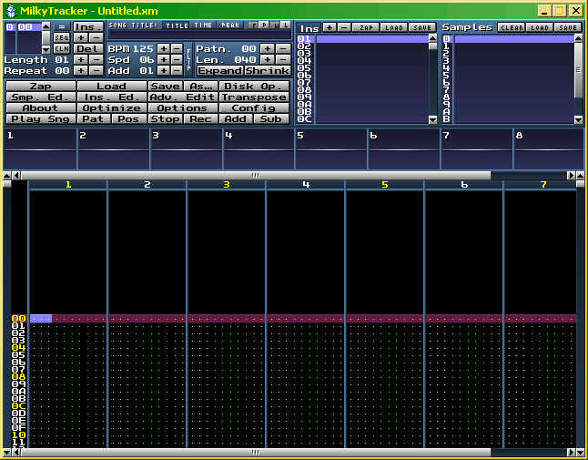
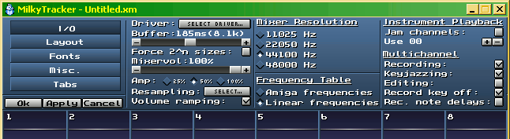
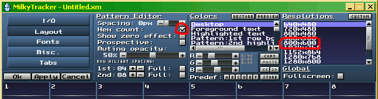
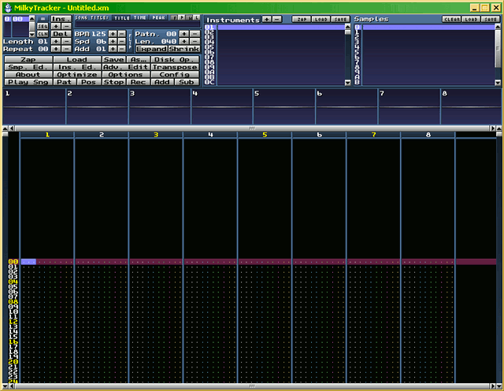
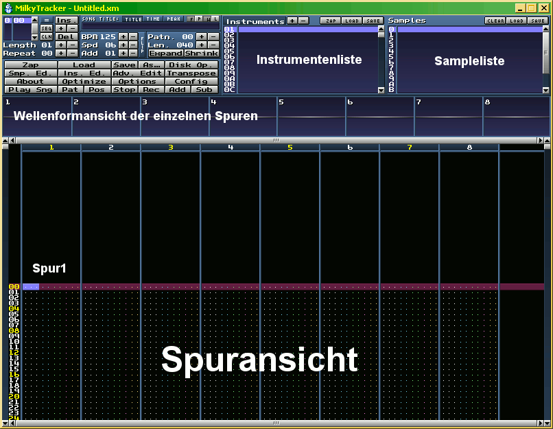

Willkommen zum Milkytracker-Grundlagen-Tutorium! (Für Milkytracker Version 0.90.80)
Zuerst sollten Sie den Milkytracker entpacken, wenn nicht bereits geschehen. - Das geht entweder mit Windows
XP Bordmitteln (und Vista?) oder mit einem zusätzlichen Zip-Pack-Entpack-programm. (siehe CD)
Herunterladen kann man den Milkytracker immer in der aktuellen Version auf: http://www.milkytracker.net - dort gibt es auch weitere
Ressourcen, Hilfen, Videos und Musikstücke plus gebrauchsfertige Instrumente
Nachdem Milkytracker (kurz Milky) nun in einem eigenen Ordner auf der Festplatte gelandet ist, können Sie noch eine Verknüpfung
zum Milkytracker auf dem Desktop erstellen, wenn Sie mögen (lässt sich dann schneller starten, als wenn man immer
durch die Ordner durch muss).
Nun kann es auch schon losgehen . Starten sie den Milkytracker mit einem Doppelklick auf 'MilkyTracker.exe' oder
auf die soeben erstellte Verknüpfung zu der Datei 'MilkyTracker.exe'. Nach dem Laden des Programmes sollte Folgendes zu sehen sein:

Bild: Standartbildschirm vom Milkytracker
Oke, nun ist der Milkytracker zwar schon gestartet, aber noch nicht an unsere Bedürfnisse angepasst. Das werden wir jetzt ändern.
Klicken Sie einmal mit der linken Maustaste auf 'Config'. Es erscheint folgendes Bild oben im Menübereich:

Bild: Übersicht Menü - Milkytracker
Klicken Sie auf Layout; danach sehen sie folgendes:

Bild: Layout Menü - Milkytracker
Klicken Sie nun bitte einmal, wie im Bild gezeigt, auf '800x600' und das Häkchen bei 'Hex count:', damit es verschwindet.
Nun noch auf 'Ok' klicken und Milkytracker neustarten, wie es Uns Milkytracker mitteilt. (Damit die Änderungen wirksam werden)

Bild: Milkytracker - skaliert
Wie im Bild zu sehen, ist der Milkytracker nun skaliert auf 800*600 Pixel und die Zahlen links laufen nicht mehr hexadezimal sondern, wie
gewohnt dezimal (also im Zehnersystem).
Schauen Wir Uns einmal eine Grafik an, um zu sehen, was nun welche Bereiche sind:

Bild: Milkytracker - Erklärung
Das Menü mit den Knöpfen ist links von der Instrumentenliste, der Rest ergibt sich im weiteren Verlauf.
Laden Wir doch einfach mal einen Song in den Milkytracker, um zu schauen, was denn alles so potentiell mit Milky möglich ist.
Milky und andere Tracker, die .mod, .xm, .it, .s3m usw. Dateien erzeugen, erstellen eine Art Midi-Sample-Hybriddatei als Songfile.
Das beudeutet, dass sowohl Notendaten als auch Instrumenten- und Samplezuweisungen plus die benötigten Samples in einer Musikdatei enthalten sind; diese
Vorgehensweise hält die Musikdateien in der Regel kleiner als mp3's.
Also: laden wir einen Song mit einem Klick (Linke Maustaste) auf 'Load' im Menü. (Wenn ich zu einem Mausklick auffordere, ist meist die linke Maustaste gemeint -
wenn die rechte Maustaste gemeint ist, schreibe ich das entsprechend dabei.) Es erscheint eine Dateiabfrage; wählen Sie dort bitte den Ort, an dem Sie die Songs (Trackerdateien/Trackerfiles) gespeichert haben, falls Sie schon welche herunter geladen haben. Alternativ wählen Sie einfach einen der Beispielsongs aus, die bei Milky dabei sind.
Ein Klick auf 'Play Sng' (Menü) spielt den ganzen Song ab . Klingt schon nicht schlecht, nicht wahr? Nun können Sie noch weitere Songs
von der CD ausprobieren, um ein Gefühl dafür zu bekommen, was alles möglich ist mit Milky. Manche Songs spielen im Milky auch in einer Endlosschleife, entweder komplett, von Anfang bis Ende,
oder mit Sprungmarke zu einer bestimmten Position innerhalb eines Songs.
Damit ist die grundlegende Übersicht über Milky auch schon beendet. Um weiter zu lesen, klicken sie bitte oben im Menü dieses
Tutoriums auf 'Instrumente und Samples' oder einfach auf: weiter...